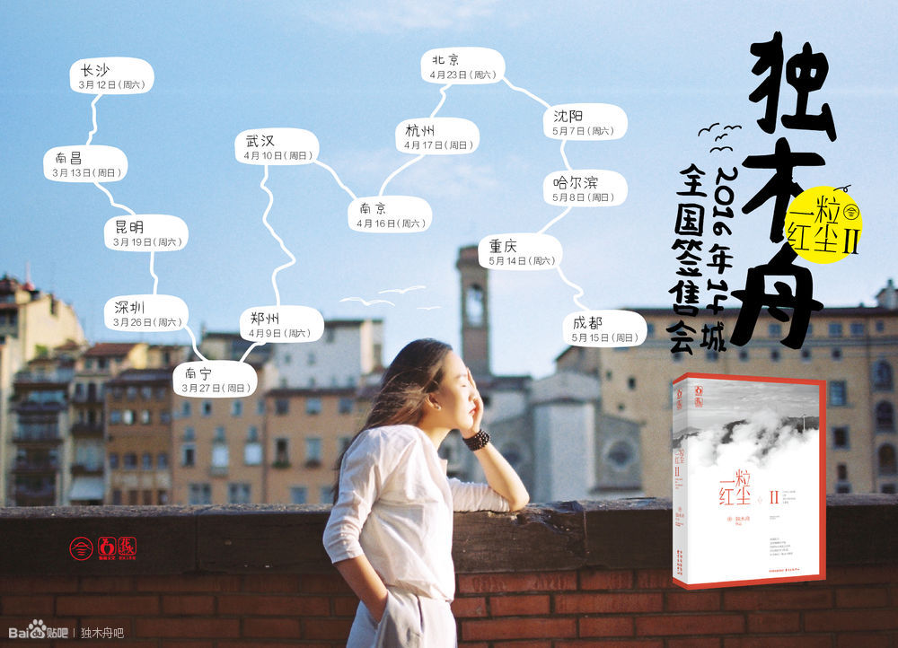

独木舟签售会
近日，青春文艺类畅销作家独木舟[微博]全国14城签售会在成都收官。这场从策划、落地执行到线上线下深度传播的签售会，耗时三个月，引发微博用户1400万阅读参与，可谓掀起国内青春文学一通热潮。
此次签售会上，主打签售的图书是独木舟新作《一粒红尘II》。作为“红尘”系列结局篇，该书一经推出便顺利占据了亚洲好书榜等各大书榜的前三甲。而在今年的14城签售会上，《一粒红尘II》也被追逐而来的万千读者奉喻为“后青春时代之书”，书中所表达出来的爱情观、人生观，以最真实的视角为大家揭示出当下社会中年轻人的心理状态。
当我们的“青春”被历史书写的同时，也在参与历史的书写。越来越多的主流文化，逐渐变成了一种被消费主义和个人主义所主宰的碎片化存在。青年们分享着相似的痛苦，却无法共享某个共同的信念与价值，青年们经历着相似的迷茫，却找寻不到通往自我的合适道路，而在这个过程当中，她们急需一种带有信仰和希望的文字来舒缓灵魂。其中，不少读者表示，独木舟的文字就具有这样的力量。
14个城市走下来，独木舟个人表示：“其实能陪大家一起成长，于我，也是一种修行”。
写作十年，追求的不是所谓“成功”
写作十年，这四个字听起来已经足够有分量。独木舟说这一路走来很辛苦，但用不到“坚持”二字，她笑称“自己除了写字不会其它的”。文字是她和世界、读者沟通与交流的一个渠道，始终保持对写作的热情和敏感，是她写作背后所谓的“秘诀”。 独木舟自己则表示不是一个爱造梦的人，希望别人在谈论起她的作品时，不要总认为她是在写爱情故事。随着年龄和阅历的增长，她更想在自己的作品中挖掘到人性的东西，想要贴近人性的本质，尤其是针对自己读者的年龄阶段的特点，是要给他们描述一个真实的世界。
在资深读者的眼里，她们始终认为，比起独木舟的靓丽外表，她们更忠诚于独木舟笔下的文字。而这，恰恰也是独木舟自己的观点，“作家终究是要拿作品说话，我没有因为长相还可以就让作品怎样，我开始写的时候也没有因为外表出色而受到优待。”，文字是作家立足市场的根本，这一点，她始终铭记在心。所以即便是市场化营销高度热络的今天，独木舟对于自己的品牌、商务，仍然区别于普通网红的合作选择。 虽然被粉丝视为高颜值作家的代表，但独木舟笑称自己完全没感觉，对男生她也不太看脸，而是更喜欢聪明、有态度的类型。
与市场融合，却不迎合
在北京场的签售会上，《一粒红尘》剧作方曾到现场给独木舟亲自送花祝贺。对于红尘系列已经售出影视改编版权这件事上，独木舟有自己的态度：“影视剧是影视剧，书是书，它们是两个独立的个体。我当然是希望尽量尊重原著，但影视剧需要有自己的故事构架，肯定有修改调整。”在她看来可能市场上的某些改编对原著粉有伤害。“但我觉得能呈现为影视剧，我是很愿意做的尝试，希望大家宽容一些。”
“青春文学”经过资本和市场的“通过仪式”之后，迅速地融入成人世界的博弈和拼杀当中，因而考验作者的就是它本该具有的革命性、创新性的一面。在《一粒红尘II》中，独木舟将焦点放在了更为复杂和纠结的都市生活，当房子、职场、婚恋等问题充斥在生活之中，爱情和友情该如何摆放。独木舟坦言这部小说比之前的作品要成熟，但她相信读者在阅读完整个故事后，会认可她所做出的改变。独木舟说，“事实上我一直都在很认真的探索着人性的复杂多样，我知道做得还不够好，但我一直在努力。”
跨界做导演，转型做编剧，很多作家都尝试与市场结合走不同的新路线。但独木舟有自己的观点，“不知道其他作者是走什么路子，但我始终会走写字这条路，而且，只写自己真正喜欢的文字”，即便是IP浪潮席卷而来，心灵鸡汤大势所趋，我们也要相信，好的作品，应该是与市场相融合的姿态，而非迎合。